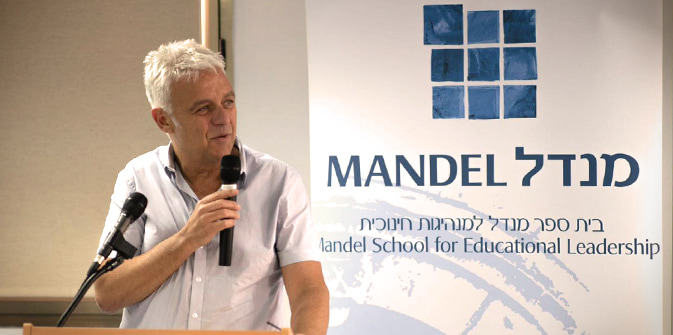
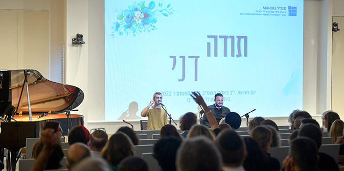

"איש אשר רוח בו" (במדבר, כ"ז: י"ח)
חבריו, עמיתיו, תלמידיו ואוהביו של דני בר גיורא התכנסו לומר לו תודה ולהביע את הערכתם על כל מה שהעניק לבית ספר מנדל למנהיגות חינוכית ולכל אחד מהם כפרט, ולאחל לו הצלחה בהמשך דרכו.
לאורך הערב דיברו עמיתים ובוגרים, חברי סגל ועמיתים מקרן מנדל-ישראל והודו לדני על עשור של הובלה ומנהיגות מעוררות השראה.
משה ויגדור, מנכ"ל קרן מנדל-ישראל, היטיב לתאר את דני: "איש חינוך, מנהיג חינוכי, מורה, מדריך, מנחה, איש חזון, איש מעשה, חבר, איש משפחה, הומניסט. כשאני מסתכל על תכונותיו של דני, אני רואה הגינות, נאמנות, יושרה, הבנה, בגרות, חוכמה – חוכמת הלב וחוכמת המעשה, סבלנות והכלה".
אסתר דנה שאולי, עוזרתו האישית של דני שליוותה אותה מיומו הראשון בבית הספר, הודתה לדני על רגישותו הרבה כמנהל ועל דלתו שהייתה פתוחה תמיד.
"כאדם למדנו ממך על אנושיות והקשבה, על המודעות לכוחן של מילים ועל הצורך לדייק בהן. על החיוך והרוגע המשפיעים על כולנו. כמחנך, למדנו ממך על מתן התחושה שמי שמולך הוא עולם ומלואו. כמנהל, למדנו ממך שאפשר להוביל בשקט, לפתור מחלוקות בנועם ולטעת בנו תחושת בטחון, את הידיעה שיש על מי לסמוך. לצד זה, הטבת לפנות מקום לביטוי ולהשפעה של כל האנשים שסביבך", אמרו במפגש עמיתות מחזור ל' ליאור ז'ורנו ורעות שליו. "בדברי הפתיחה שנשא באירוע פתיחת שנת הלימודים כאן בבית הספר, המשיג פרופ' מאיר בוזגלו את התנאים המאפשרים את קיומה של מנהיגות רעיונית: הוא דיבר איתנו על עצמאות ועל היכולת להתנתק מתלות, על חוסר החיפוש של הכרה בעשייה, ועל היכולת להסתפק בשינוי קטן אך משמעותי בעולם. כשדיבר אלינו, חשבנו עליך: מנהיג רעיוני שאינו מוותר על עצמאות, שתאפשר לו נאמנות לערכיו, שאינו מצפה להכרה, ואינו מחפש זיקוקים, ומבחינתו גם שינוי קטן בעולם, כל עוד הוא מגיע מבפנים והוא בכיוון הנכון, הוא שינוי ראוי. כל אלה מאפשרים לך להיות מנהיג רעיוני, המשפיע על סביבתו ועוסק כל העת בבירור ערכי והשתנות תמידית. טביעת האצבע שלך תיוותר בין כותלי המוסד, וחשוב מכך בעשרות בוגריו הרבים בעשור האחרון... היציאה לדרך חדשה ממקום כל כך יציב ושלם מהווה עבורנו השראה", אמרו העמיתות.
"דני, באישיותו ובסגנונו, מחנך למצב תודעתי אחר: של הסתגלות, סבלנות, צניעות, והתפכחות מהיוהרה שניתן לשלוט באנשים ולהנדס כל דבר. למרות ניסיונו הכביר של דני בניהול מערכתי רחב היקף במוסדות גדולים, הוא ידע להיות איש לא ממסדי. הוא הצליח לא להיות פקיד כי הוא שכלל את שיטת האטת הזמן כדרך חיים, ולא כאמצעי שליטה", אמר
פרופ' אימן אגבאריה, חבר סגל בית ספר מנדל למנהיגות חינוכית. "כתבתי לך כי היית לנו מנהיג. בלי טווסות של רעיונות, של תוכניות ושל אכפתיות מעושה, היית לנו מנהיג. בהשראה, בשקט, בהכלה, בפתיחות ובמחויבות שיצרת עבורנו ובינינו בבית הספר, היית לנו מנהיג. הערב אנחנו נפרדים ממך, ושמחים בשבילך על היציאה לדרך חדשה", אמר אגבאריה.

"כשסוער ולא יציב, אנשים מחפשים קרקע בטוחה להניח עליה את כפות הרגליים, את הנפש", אמר דני מעל הפודיום. "האמירה הראשונה שרוצה אני לומר לכם היא תהיו אתם אי לעצמכם. תהיו אי לעצמכם כדי שתוכלו להיות אי לאחרים. תקדישו זמן לתחזוק עצמי, זה תמיד היה חשוב, היום יותר מאי פעם. הדבר השני, מכוון חינוך: הדרך הטובה ביותר להיות ערוך לסערות היא העמקת השורשים וחיזוק היסודות. חזרו לשאלות הגדולות, לעומק, למשמעות הקיום שלנו, למסורות הגדולות ולעיסוק בזהות. אני רוצה לקוות בשביל כולנו שתנועות כמו 'רוח האדם בחינוך', האטה בחינוך, יתנו את הטון ויסמנו את הדרך למערכת החינוך בשנים הבאות. השנים שניהלתי את בית ספר מנדל למנהיגות חינוכית היו משמעותיות מאד עבורי. בראש ובראשונה מפני שמאז שעזבתי את ניהול התיכון, ובכל תפקידי המטה שעשיתי, ראיתי את עולם החינוך דרך חדרי ישיבות וצגי מחשב, היה לכך מחיר אישי כבד. החזרה למנדל הייתה גם שיבה מרגשת ומרתקת למפגש האנושי והבלתי אמצעי עם העמיתים והעמיתות. ניהלתי את בית הספר עשור, וליוויתי כמאתיים עמיתות ועמיתים. נדמה לי שלפחות על חלקם הייתה לי השפעה והצלחתי לגעת בנפשם ואולי אף תרמתי מעט לפועלם בעולם", אמר.
בסיומו של הערב הודה דני למי שליוו אותו במהלך השנים שניהל את בית הספר: לחברי הסגל, לעמיתות ולעמיתים, לצוות בית הספר, לאסתר דנה שאולי ולמאיה ברק שליוו אותו בתפקידו. "תודה למנכ"ל הקרן, לנשיא וה-CEO יהודה ריינהרץ, ותודה אחרונה למורט מנדל ז"ל על הזכות הגדולה שנפלה בחלקי לעבוד לצדו. מורט היה אדם מעורר השראה, למדתי ממנו רבות על נדיבות, מקצוענות ועל כמה חשוב לדעת לחלום בגדול".
קהילת מנדל כולה מאחלת לדני שימשיך בעשייתו – כאיש חינוך וכהומניסט.
{kind=link}
{kind=link}
{kind=link}